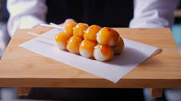

Home
Demon Slayer Mitarashi Dango

Description
These sweet and savory dango are a favorite snack among the Demon Slayers.
They're perfect for a quick energy boost during training or a delicious
treat after a long day.
Ingredients
- 2 cups of glutinous rice flour
- 1 cup of sugar
- 1/2 cup of water
- 1 tablespoon of soy sauce
- 1 teaspoon of sesame oil
- Green onions for garnish
Instructions
- Mix the glutinous rice flour, sugar, and water to form a dough.
- Shape the dough into small balls and steam them for 10 minutes.
- In a bowl, mix the soy sauce and sesame oil to create the glaze.
- Once the dango are cooked, brush them with the glaze.
- Garnish with green onions and serve hot!